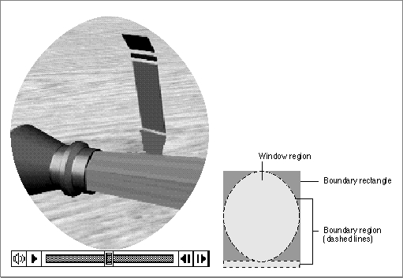
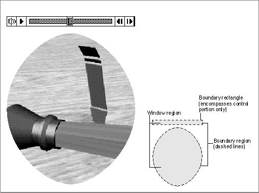
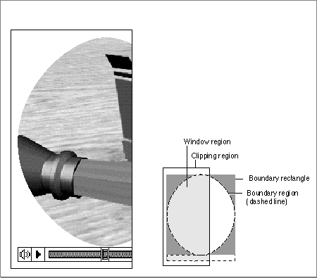

Spatial Properties
Movie controller components define several display regions that govern how a controller and its movie are displayed. In addition, movie controller components support a number of functions that allow your application to manipulate these regions and thereby control the display of a controller and its associated movie. This section discusses each of these regions and the movie controller component functions that your application can use to work with these regions.The displayed representation of a movie controller consists of two parts: the movie
and the controller itself. The movie consists of the QuickTime movie image. The controller consists of the visual elements that allow the user to control the movie.
Figure 2-1 on page 2-5 shows a sample controller. In this figure, note that the movie is attached to the controller--that is, the movie and the controller are contiguous. Movie controller components also allow you to create controllers that are separate from, or detached from, their associated movies. You use theMCSetControllerAttachedfunction (described on page 2-34) to control this attribute. This gives you the freedom to position the movie and the controller.Movie controller components define several spatial elements that allow your application to control the display of a movie and its controller. Figure 2-3 shows the relationships between these spatial elements for attached controllers, whereas Figure 2-4 shows the relationships between these spatial elements for detached controllers.
Figure 2-3 Movie controller spatial elements for attached controllers

The controller boundary rectangle is a rectangle that completely encloses the controller. If the controller is attached to its movie, the controller boundary rectangle also encloses the movie. The width of this rectangle corresponds to the widest part of the displayed representation of the controller (and its attached movie). Similarly, its height is derived from the highest part of the controller (and its attached movie). You can use the
MCSetControllerBoundsRectfunction to modify the controller boundary rectangle to define display transformations to be applied to a controller and its movie.
You can retrieve a controller's boundary rectangle by calling theMCGetControllerBoundsRectfunction (described on page 2-39).The controller boundary region defines the region occupied by the controller.
If the movie is attached to the controller, the controller boundary region also includes the movie. The controller boundary region corresponds exactly to the display footprint of the controller (and its attached movie). You can retrieve the boundary region of a controller by calling theMCGetControllerBoundsRgnfunction (described on page 2-40).Figure 2-4 Movie controller spatial elements for detached controllers

The controller boundary rectangle and controller boundary region both work with the unclipped display representation of the controller and its movie. The controller window region represents the portion of the controller and its movie that is actually displayed on the computer screen, after clipping by the controller clipping region. The controller window region always includes both the controller and its movie, whether the controller is attached or detached. You can retrieve a controller's window region by calling the
MCGetWindowRgnfunction (described on page 2-41). You can manipulate a controller's clipping region by calling theMCSetClipandMCGetClipfunctions (described on page 2-42 and page 2-43, respectively). Figure 2-5 shows how the controller clipping region affects the controller window region.Figure 2-5 Clipping the controller window region with the controller clipping region
